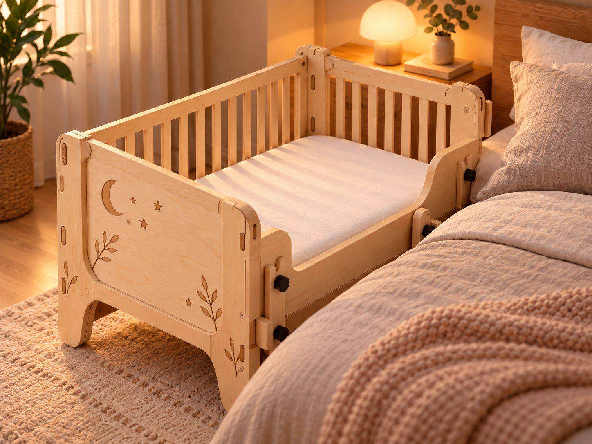
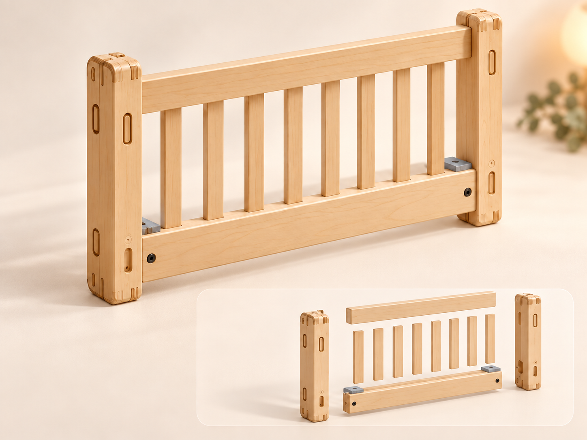
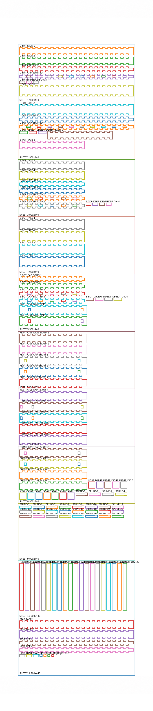

קורות ועמודים
מסגרת העץ מורכבת מעמודים וקורות. פרטי החיבור נשארים גלויים בהדמיה כחלק מהשפה של המוצר.
אובייקט 06 / מנוחה
התמונות מציגות הדמיות של הפרויקט. פרטי המבנה והמידות עדיין בתכנון; תמונות הבנייה והמוצר המוגמר יתווספו בהמשך.

פריסת החיתוך מציגה שלוש דפנות ומייצב. מזהי החלקים והגליונות נשמרו בשרטוט. זהו אב־טיפוס בתכנון; התאמת המזרן ודרישות הבטיחות לשימוש תינוקות עדיין דורשות אימות.
מיטת תינוק מעץ בתכנון לצד מיטת ההורים. ההדמיה משלבת לוחות מעוטרים בירח, כוכבים ועלים עם קורות, שלבים וחיבורים גלויים.
תהליך הבנייה / מבנה
לצד ההדמיה הכללית, המבט על הדופן מציג את הקשרים בין העמודים, הקורות והשלבים. המבט המפורק מפריד את החלקים כדי להציג את רעיון ההרכבה.

מסגרת העץ מורכבת מעמודים וקורות. פרטי החיבור נשארים גלויים בהדמיה כחלק מהשפה של המוצר.
השלבים האנכיים משתלבים בין הקורות. המבט המפורק מציג בנפרד את מרכיבי הדופן ואת נקודות המפגש ביניהם.
ירח, כוכבים ועלים מופיעים על לוח הקצה בהדמיה הראשית, ומוסיפים למבנה הגאומטרי שכבה של פרטים עדינים.
03 / תכנון החיתוך העדכני
גליון התכנון מציג את פריסת חלקי הפרויקט על לוחות לקראת חיתוך. לצפייה בפרטי הפריסה, פתחו את הגליון בגודל מלא.
פתיחת גליון התכנון בגודל מלא
פריסת החיתוך מציגה שלוש דפנות ומייצב. מזהי החלקים והגליונות נשמרו בשרטוט. זהו אב־טיפוס בתכנון; התאמת המזרן ודרישות הבטיחות לשימוש תינוקות עדיין דורשות אימות.
התאמת מידות
רוצים לשוחח על הפרויקט או לבדוק התאמה לחלל? אפשר לפנות עם המידות והרעיון הרצוי ולדון באפשרויות במסגרת התכנון.